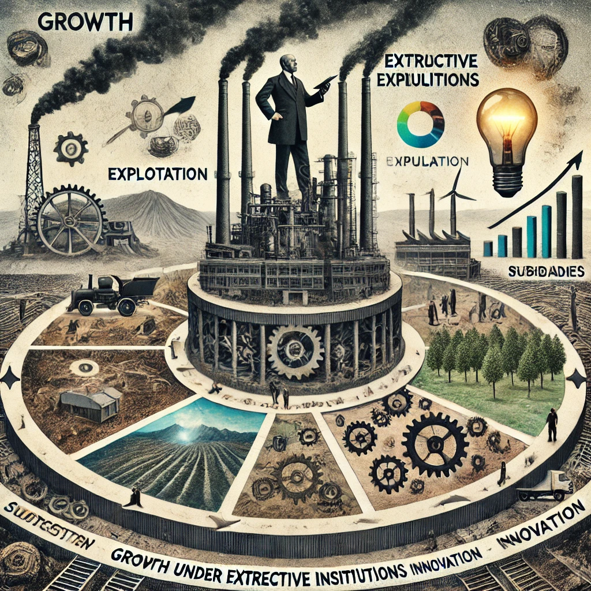

Este capítulo explica que el crecimiento económico bajo instituciones extractivas es posible, pero limitado. A través de ejemplos como el de la Unión Soviética, los autores muestran que las instituciones extractivas pueden generar crecimiento durante un tiempo mediante el uso de fuerza, control centralizado y explotación de recursos. Sin embargo, este crecimiento es insostenible a largo plazo porque carece de innovación y dinamismo.
Las empresas extractivas prosperan en este tipo de economía controlada, beneficiándose de subsidios estatales, protección del gobierno y ausencia de competencia. Sin embargo, el crecimiento es frágil porque depende de la explotación intensiva de recursos sin promover la creación de valor a través de la competencia o la innovación.